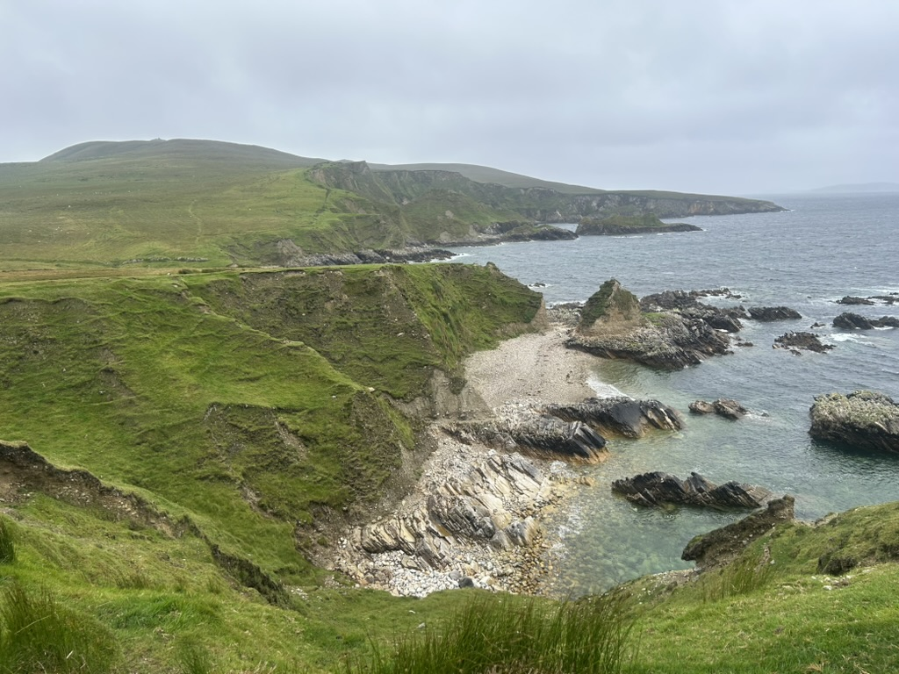
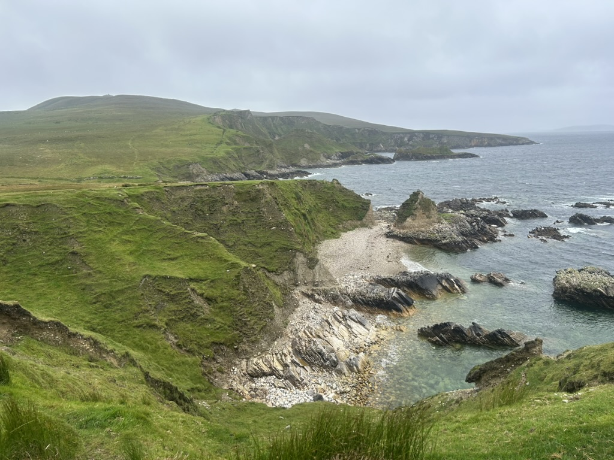

Ireland is a beautiful country, rich in culture and nature. It is a perfect travel destination for lovers of history, as the reminants of Irish history are seen embeded in every cobblestone you walk upon. It's dramatic landscapes and lush never-ending hills are the perfect escape from the bustiling scenes of citylife. There are endless places to see and things to learn in Ireland, but here are some suggestions!
trinity college: this is defenitely a basic suggestion but it is truly so worth it seeing the Trinity College campus, it really makes you wish you were a student there living the full academia lifestyle. Also if you've seen or read Normal People you know the impact....
the GPO: if you know anything about irish history, you know the importance of this building. I had previously not known anything before going to Ireland this past summer, but learning about the Easter Rising of 1916 and what went down in that very building was so fascinating to me. You can see the same bullet marks from that same event on the pillars. SOoo coool
Churches: The first image is actually from the Dublin Castle, but i thought the picture was cool, I would really suggest seeing any church, which are sprinkled everywhere in dublin! The second photo is from Smith Church, the first church in Dublin!! These ancient places of worship are so breathtakeningly beautiful, the architecure is craaaaaay
Books Upstairs: This place is awesome!! New books downstairs, with an upper section filled with vintage older books. It was so cool going through all of the older books, many of which about history and specifically the history of Ireland. I wish I bought one :(
 

Visting Connemara: Just a two hour drive out of Dublin, where you can experience the wool weaving culture of that area, and go for a drive amongst the beautiful misty mountains and colorfully dyed sheep! I got to learn how to spool wool, and saw sooo many sheep. You can basically drive in the mountains in the middle of nowhere and it is sooo beautiful, made me feel like an old 18th century writer going to the mountains to write my next novel...

Howth: Just an hour or two train ride out of Dublin, Howth is a beautiful coastal city. You can hike along a cliffside with a crazy view of the ocean, engulfed in wildflowers and undisturbed nature. Even the walks in the town is quite nice and the houses are the cutest things eva
Glendalough: Beautiful countryside area, where you can walk amongst the deep irish woods. These woods are so mysterious and with all of the gaelic folktales I heard, I swear magical.
also random but look how cool the police vehices are....maybe i'm the only one who thinks they're cool idk... drop a comment if you think they're cool. also the police in ireland are like completely unarmed and actually help the civillians, with like directions or anything etc.... #safe